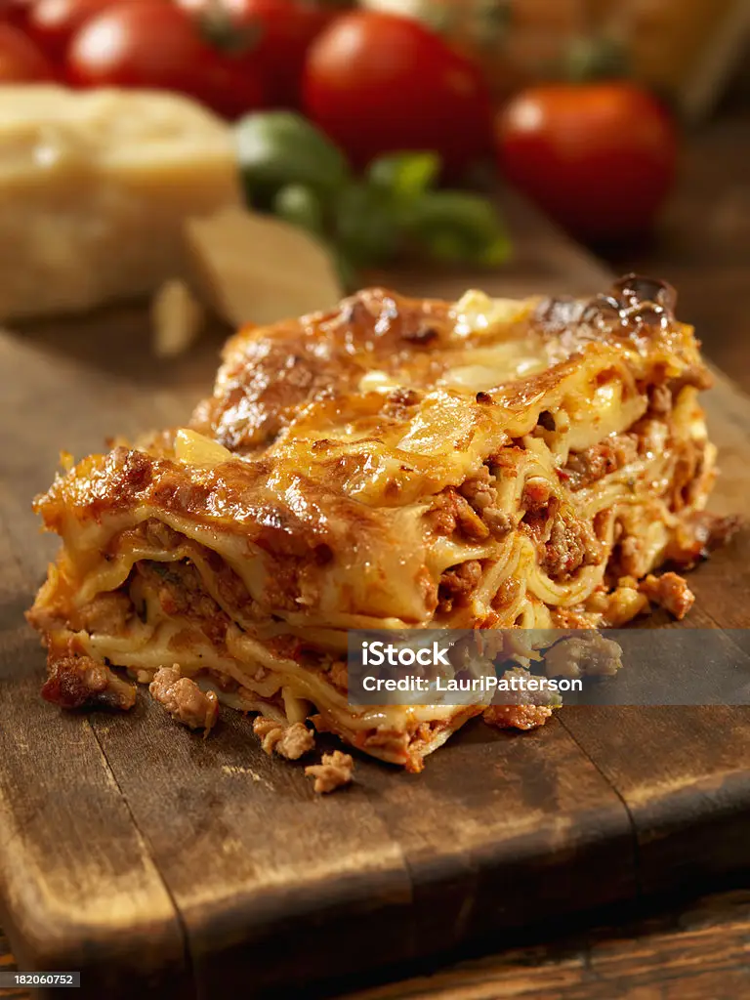

Lasagna

Description
Lasagna is a classic Italian dish made with layers of pasta, cheese, and meat or vegetables, baked to perfection.
Ingredients
- Lasagna noodles
- Ricotta cheese
- Mozzarella cheese
- Parmesan cheese
- Ground beef or sausage
- Marinara sauce
- Eggs
- Garlic
- Onion
- Olive oil
- Salt and pepper
Steps
- Preheat the oven to 375°F (190°C).
- Cook the lasagna noodles according to package instructions.
- In a skillet, heat olive oil and sauté garlic and onion until translucent.
- Add ground beef or sausage and cook until browned.
- Stir in marinara sauce and let simmer for 10 minutes.
- In a bowl, mix ricotta cheese, egg, salt, and pepper.
- Layer noodles, meat sauce, ricotta mixture, and mozzarella cheese in a baking dish.
- Repeat layers until all ingredients are used, finishing with mozzarella and Parmesan on top.
- Bake for 45 minutes or until cheese is bubbly and golden.
- Let it cool for a few minutes before serving.
Home